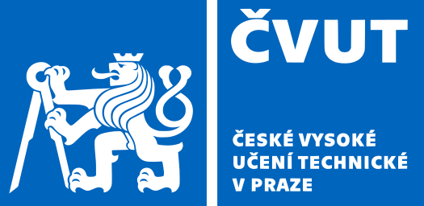
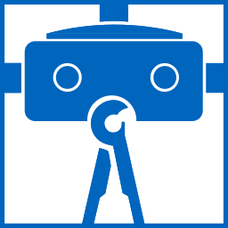

|  |
|
 |
Follyverse and Tames are the outputs of a postdoctoral project at MoLab, Department of Digital Modelling, within the Faculty of Architecture of Czech Technical University, Prague. Their purpose is to enable architectural researchers and students to create and publish interactive, immersive and dynamic presentation and 3D surveys without worrying about the complexities of graphics and gaming programming.
The project started with Tames, a toolkit in Unity that was named so as it supposedly tamed game objects (hence, its original basic class was TameObject, a naming convention which remained and spread to other classes). Please bear with this naming :). Then, to modularise its web access, the Follyverse was added. Follyverse is the collective title for two Unity projects Folly Server and Folly Hub. The latter is a dedicated server app and the latter is an interface to run Tames' exported projects offline or online. The name Folly was selected because at that stage of the project, the presumption was that only one building/project will be loaded at a time without its context (hence a folly, in architectural sense).
The better question would be "what would you like to do?". There are a few possibilities:
In this documentation, the basics of using both Tames Toolkit and Follyverse apps are explained. The documentation is not complete yet but will be constantly improved and updated.
Please follow the instruction in the landing page for respective tools:
Folly hub for Windows (64bit) and Folly Hub's source (C#) on GutHub
Folly server for Windows (64bit) and its source (Unity) on GitHub.
Tames Toolkit's Unity source on GitHub.
Unity Hub: please follow the instructions at their page to install Unity Editors.
System requirements:
Tames Toolkit, Follyverse and this documentation are originally developed by Peiman Amini Behbahani at Faculty of Architecture, CTU in Prague, in 2022 and 2023.
The web functions of both Tames Toolkit and Follyverse are based on RiptideNetworking library created by Tom Weiland.